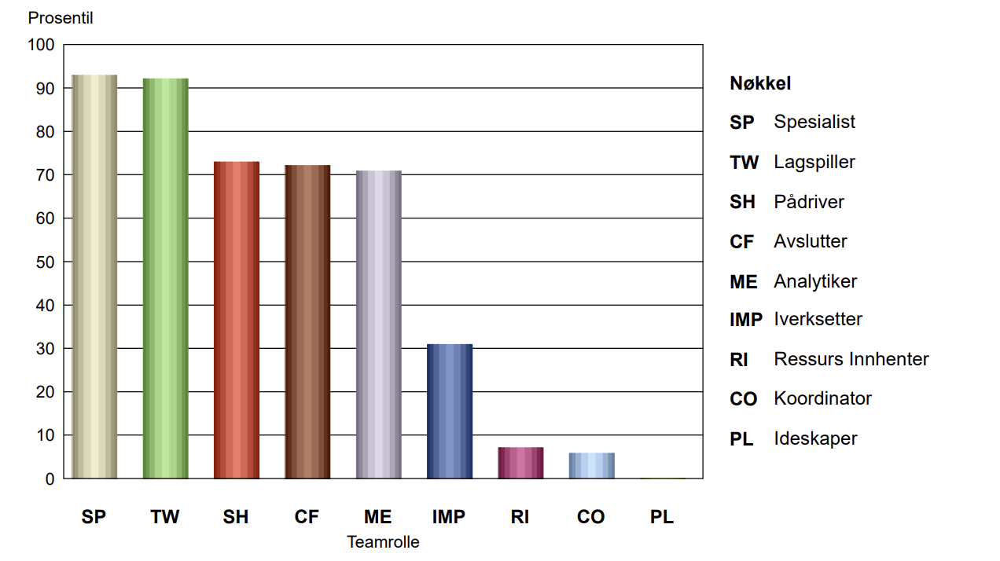

Frida
Student på NTNU og medlem av gruppe 5
Sterke sider:
- Foretrekke å jobbe i et profesjonelt miljø eller med et avgrenset fagfelt der erfaring og kompetanse teller mer enn ledelse.
- Ta en kritisk og profesjonell tilnærming til ditt fagområde.
- Trives godt med å kunne konsentrere deg helt og holdent om et fagfelt.
- Trives godt med arbeid og oppgaver der du virkelig kan fordype deg i et område.
Mulige svakheter:
- ha en tendens til holde blikket på egne ting og se litt bort fra helheten og det store bildet.
- være tilbøyelig til å kunne presse på for å komme videre og få ting gjort uten tilstrekkelig forankring og samråd med andre.
- være lite opptatt av å utforske muligheter eller komme opp med eller få fram nye ideer.